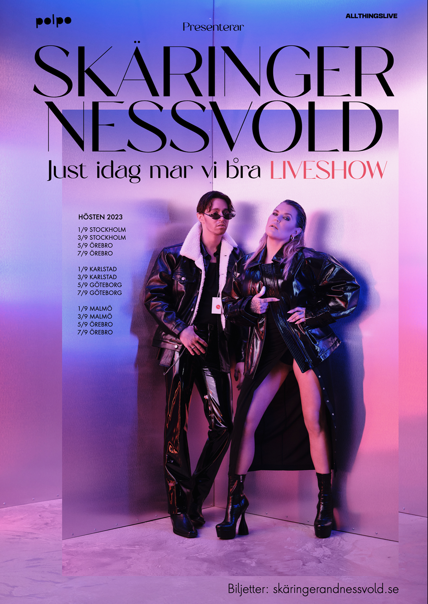
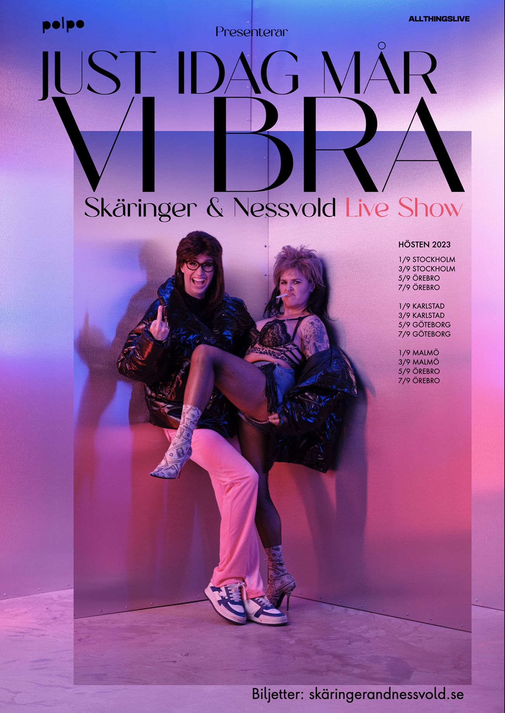
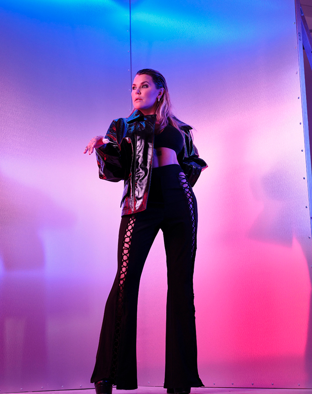
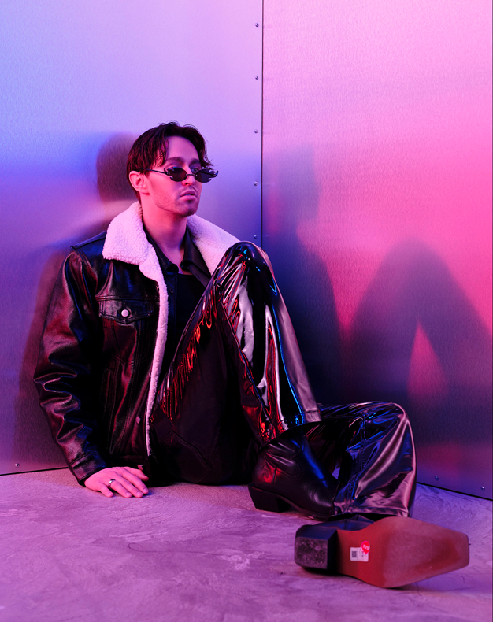
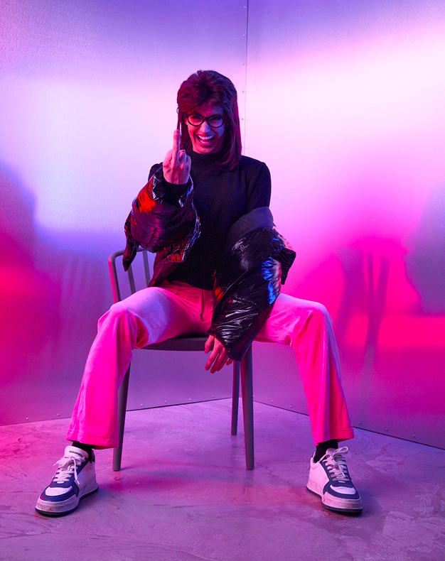
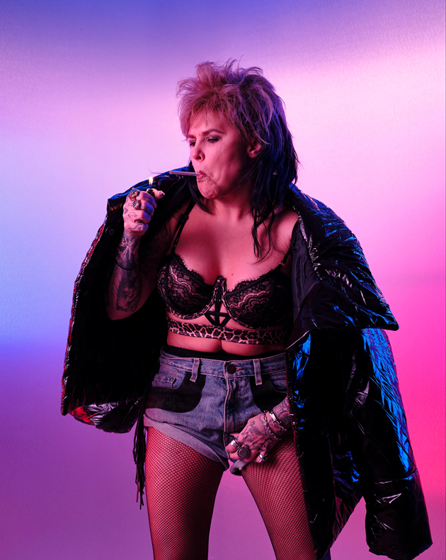

We devised the creative direction for 'Just Idag Mår Vi Bra' — a sell-out stadium show starring Swedish comedians Mia Skäringer and Hampus Nessvold. A big gig for all parties. The tone set was a cheeky take on the trend of hyper-serious, over-styled Scandi-fashion magazine covers. Look closely and you might spot the subtle styling faux-pas.





